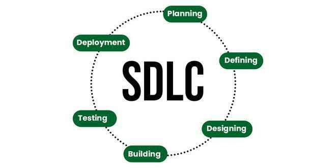
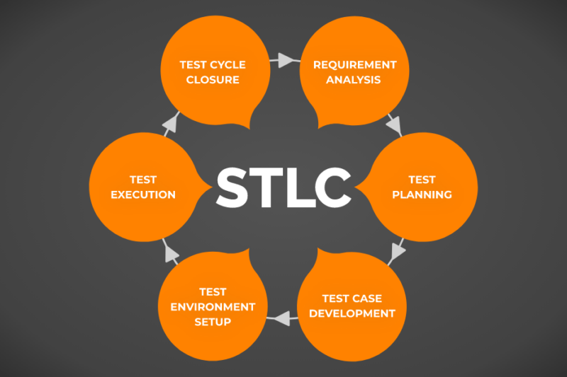
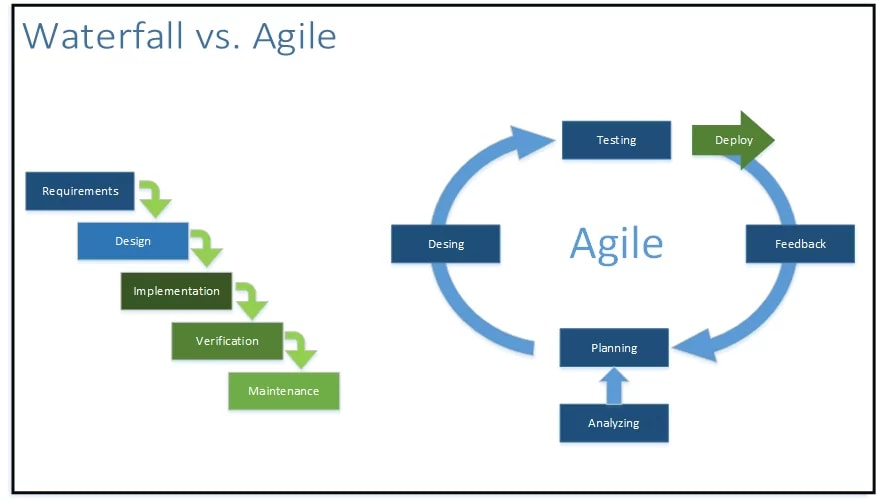
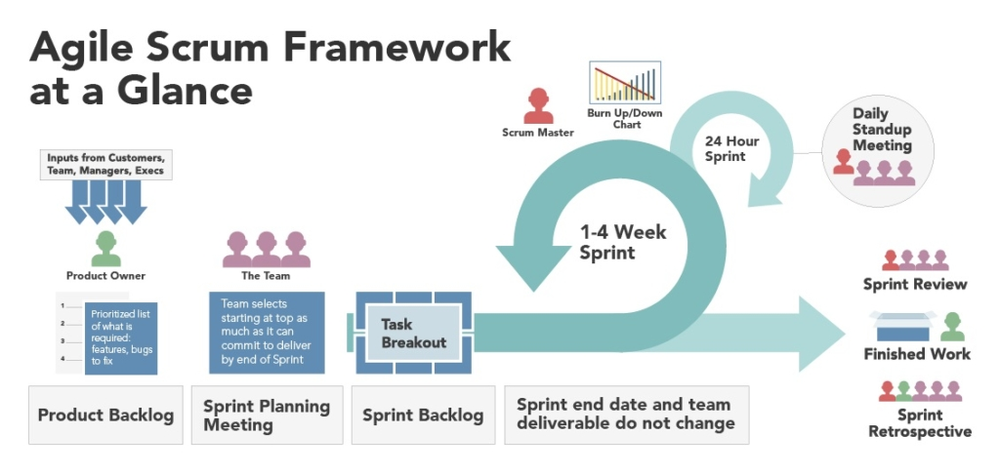

QA Flashcards
1. База: що таке тестування
- Software Testing — процес перевірки ПЗ, щоб виявити дефекти та переконатися, що продукт відповідає вимогам.
- Defect — помилка в коді, вимогах або дизайні.
- Bug — прояв дефекту під час виконання програми (коли бачиш некоректну поведінку).
- QA (Quality Assurance) — процесний підхід: стандарти, правила, покращення процесу розробки, щоб запобігати дефектам.
- QC (Quality Control) — робота з самим продуктом: тестування, рев’ю, інспекції, щоб знайти дефекти.
2. Методи та типи тестування
Методи (як ми тестуємо — доступ до коду)
- Black Box — тестуєш функціонал, не знаючи коду. Робота тільки з вхідними / вихідними даними.
- White Box — тестування з повним доступом до коду та логіки (гілки, умови, покриття коду).
- Grey Box — часткове знання внутрішньої логіки (структура БД, API, архітектура).
Типи (що саме / з якою ціллю тестуємо)
- Functional testing — перевірка, що система робить те, що прописано у вимогах.
- Non-functional testing — продуктивність, безпека, юзабіліті, сумісність тощо.
- За ступенем: manual та automation.
- За стабільністю: Smoke, Sanity, Regression тощо.
3. Рівні тестування
- Unit Testing — тестування окремих функцій / класів / методів. Найчастіше роблять розробники.
- Integration Testing — перевірка взаємодії між модулями (фронт ↔ бек, сервіс ↔ БД).
- System Testing — тестування всієї системи як єдиного цілого в середовищі, наближеному до продакшену.
- Acceptance Testing (UAT) — приймальне тестування, яке проводять замовники / користувачі перед релізом.
4. Функціональне тестування (основні види)
| Тип тестування | Опис | Коли застосовується / мета |
|---|---|---|
| Smoke Testing | Швидка поверхнева перевірка критичного функціоналу після нової збірки. | Вирішити, чи взагалі має сенс продовжувати тестування цієї збірки. |
| Sanity Testing | Перевірка конкретних змін / фіксів. | Упевнитися, що певна функція працює після виправлення або невеликих змін. |
| Regression Testing | Повторне тестування вже перевіреного функціоналу після змін. | Переконатися, що новий код не зламав те, що працювало раніше. |
| Exploratory Testing | Дослідницьке тестування без жорстких сценаріїв. | Швидко знаходити неочевидні дефекти, вивчаючи поведінку системи. |
| Ad-hoc Testing | Неформальне тестування без документації. | Шукати баги на основі інтуїції та досвіду. |
| Positive Testing | Тестування з коректними даними. | Перевірити, що система працює згідно з вимогами при правильному використанні. |
| Negative Testing | Тестування з некоректними даними та діями. | Перевірити, як система поводиться з помилками користувача / невалідними даними. |
| Boundary Value Testing | Перевірка граничних значень: мінімум, максимум, трохи нижче / вище меж. | Виявити проблеми з обробкою крайніх значень і діапазонів. |
| Equivalence Partitioning | Поділ вхідних даних на класи еквівалентності (валідні / невалідні). | Зменшити кількість тестів, зберігши адекватне покриття. |
5. Життєвий цикл бага (Bug Life Cycle)
Bug Life Cycle (життєвий цикл дефекту) — це послідовність статусів, через які проходить баг від моменту виявлення до повного закриття. Розуміння цього циклу допомагає QA, девелоперам і менеджерам правильно відслідковувати стан дефектів.
Типові етапи Bug Life Cycle
- New — тестувальник створює баг-репорт. Дефект описаний, задокументований, але ще не призначений відповідальному.
- Assigned — баг призначений конкретному розробнику або команді. Хтось офіційно відповідає за його виправлення.
- In Progress / Open — розробник працює над фіксом: відтворює проблему, аналізує причину, змінює код.
- Fixed — розробник вніс зміни в код і вважає, що проблема усунута. На цьому етапі баг ще не вважається закритим.
- Ready for Retest / To Verify — збірка з фіксом потрапила на тестове середовище, і дефект готовий до перевірки тестувальником.
- Retest — QA виконує кроки відтворення, перевіряє, чи дійсно проблема зникла, і чи не з’явилися побічні ефекти.
- Closed — дефект більше не відтворюється, всі пов’язані сценарії працюють коректно. Баг офіційно закривається.
- Reopened — якщо під час ретесту або в наступних збірках проблема знову проявилась, баг відкривають повторно й цикл проходиться ще раз.
- Deferred / Postponed — виправлення відкладено (низький пріоритет, мало впливає на користувача, немає ресурсів прямо зараз).
- Rejected / Won’t Fix — дефект не вважають проблемою (наприклад, очікувана поведінка або дублікат іншого бага), тому його не будуть виправляти.
Роль QA у Bug Life Cycle
- коректно описати дефект: кроки, очікуваний та фактичний результат;
- проставити пріоритет і серйозність (severity / priority);
- слідкувати за зміною статусів і нагадувати, якщо критичні баги “висять”;
- ретельно ретестити після фіксу та вирішувати, чи можна закривати дефект.
6. Чек-листи, тест-кейси та баг-репорти
6.1. Чек-лист (Checklist)
Чек-лист — перелік коротких перевірок без детальних кроків. Використовується для швидких проходів, smoke, sanity, дослідницького тестування.
- одна перевірка — один пункт;
- мінімум тексту, максимум конкретики;
- добре підходить як для GameDev, так і Web UI.
[ ] Головне меню: кнопка "New Game" активна та працює
[ ] Модель персонажа не провалюється під землю на старті
[ ] Налаштування гучності зберігаються після рестарту гри
[ ] Квест-трекер оновлюється після виконання завдання
Приклад Web чек-листа:
[ ] Логотип на головній сторінці відображається коректно
[ ] Поля Email / Password помітні та активні
[ ] Кнопка Login активна при валідних даних
[ ] Верстка не ламається на ширині 360px
[ ] Валідація Email працює (некоректні значення блокуються)
6.2. Тест-кейс (Test Case)
Тест-кейс — формалізований сценарій із чіткими кроками, тестовими даними та очікуваним результатом.
- ID — унікальний номер;
- Назва — що перевіряємо;
- Передумови (Preconditions);
- Кроки (Steps);
- Очікуваний результат;
- Фактичний результат / Статус — під час тесту.
ID: TC-GAME-001
Назва: Створення нового сейву
Preconditions: Гра запущена, головне меню
Steps:
1. Натиснути "New Game"
2. Дочекатися завантаження рівня
Expected Result: Гра стартує з початкового рівня, створено новий сейв
Web тест-кейс:
ID: TC-WEB-002
Назва: Авторизація з валідними даними
Preconditions: Користувач існує в БД
Steps:
1. Ввести валідний email
2. Ввести валідний пароль
3. Натиснути "Login"
Expected Result: Користувача перенаправляє на Dashboard
6.3. Баг-репорт (Bug Report)
Баг-репорт — опис дефекту з чіткими кроками відтворення, очікуваним та фактичним результатом.
- Title — що зламано і де;
- Environment — платформа, збірка, браузер;
- Steps to Reproduce — нумеровані кроки;
- Expected / Actual result;
- Severity / Priority;
- Attachments — скріни/відео/логи.
Title: [PC] Крашається гра при завантаженні сейву "Forest"
Environment: PC, build 1.0.0.1234, Win10, RTX 3060
Steps:
1. Відкрити меню Load Game
2. Обрати сейв "Forest_AutoSave_01"
3. Натиснути "Load"
Expected: Рівень успішно завантажується
Actual: Гра крашиться через 3–4 секунди
Severity: Critical
Web баг-репорт:
Title: [WEB] 500 Error при відправці форми "Contact Us"
Environment: Chrome 124, Win11
Steps:
1. Заповнити форму
2. Натиснути "Send"
Expected: Повідомлення "Message sent"
Actual: Сервер повертає HTTP 500
Severity: Major
1. SDLC — Software Development Life Cycle
SDLC (Software Development Life Cycle) — це
життєвий цикл розробки програмного забезпечення.
Definition (EN): SDLC is a structured process that
defines all phases of software development, from idea and requirements to
release and maintenance.

SDLC описує усі етапи створення ПЗ і допомагає зробити розробку прогнозованою, контрольованою та якісною.
Типові етапи SDLC
- Planning — визначення цілей продукту, бізнес-потреб, обсягу робіт, ризиків і приблизних строків/ресурсів.
- Requirement Analysis — збір і аналіз вимог, уточнення функціоналу, узгодження очікувань замовника й користувачів.
- Design — розробка архітектури системи, продумування модулів, інтеграцій, структури БД, інтерфейсів.
- Implementation / Development — безпосереднє написання коду, реалізація фіч, unit-тести, інтеграція модулів.
- Testing — перевірка продукту (функціональне, нефункціональне тестування, регрес, UAT тощо).
- Deployment — розгортання на продакшені, реліз до кінцевих користувачів.
- Maintenance — підтримка, фікси, оновлення, розвиток продукту після релізу.
2. STLC — Software Testing Life Cycle
STLC (Software Testing Life Cycle) —
життєвий цикл тестування програмного забезпечення.
Definition (EN): STLC is a set of phases that describe
the testing process, from test planning and design to execution and test
closure.

STLC зосереджується саме на процесі тестування всередині проєкту і є частиною SDLC.
Основні етапи STLC
- Requirement Analysis — тестувальники аналізують вимоги, шукають прогалини, ризики, уточнюють, що і як буде тестуватися.
- Test Planning — визначення стратегії, обсягу, підходів, ресурсів, інструментів і графіка тестування.
- Test Case Development — створення тест-кейсів, чек-листів, підготовка тестових даних та очікуваних результатів.
- Environment Setup — підготовка тестового середовища: стенди, БД, доступи, конфігурації, необхідні інструменти.
- Test Execution — виконання тест-кейсів, логування результатів, заведення баг-репортів.
- Test Cycle Closure — аналіз результатів, звіти про якість, висновки й рекомендації для наступних ітерацій.
3. SDLC vs STLC
SDLC і STLC тісно пов’язані, але відповідають за різні рівні процесу.
| SDLC | STLC |
|---|---|
| Описує повний життєвий цикл розробки ПЗ: від ідеї та вимог до підтримки після релізу. | Описує життєвий цикл тестування в межах SDLC: що робить QA від аналізу вимог до закриття тестового циклу. |
| Охоплює бізнес-аналіз, дизайн, розробку, тестування, деплой, підтримку. | Фокусується на аналізі вимог, плануванні, дизайні тестів, виконанні, звітності та поліпшенні процесу тестування. |
| Відповідає за успіх всього продукту. | Відповідає за якість продукту і вчасне виявлення дефектів. |
Коротко: SDLC — це “велика рамка” всього проєкту, а STLC — детальний опис того, як всередині цієї рамки працює тестування.
4. Висновки
- SDLC without STLC = ризик отримати функціональний, але “сирий” продукт.
- STLC without SDLC = тестування без чіткої стратегії та контексту проєкту.
- У реальному проєкті SDLC і STLC працюють разом і доповнюють одне одного.
1. SQL для QA (база)
Що потрібно знати джуну
- Розуміти, що таке таблиця, row, column, primary key, foreign key.
- Вміти читати й писати прості SELECT-запити.
- Фільтрація через WHERE: =, <>, >, <, BETWEEN, LIKE.
- Сортування через ORDER BY.
- Ліміти: LIMIT.
- Агрегації: COUNT, SUM, AVG, MIN, MAX + GROUP BY.
- Базове розуміння JOIN (INNER, LEFT).
Приклади базових запитів
-
SELECT * FROM users;— отримати всіх користувачів. -
SELECT id, email FROM users WHERE is_active = 1;— активні користувачі. -
SELECT * FROM orders WHERE created_at >= '2025-01-01';— замовлення за період. -
SELECT status, COUNT(*) FROM orders GROUP BY status;— скільки замовлень у кожному статусі. -
SELECT u.name, o.total FROM users u INNER JOIN orders o ON u.id = o.user_id;— користувачі + їхні замовлення.
2. HTTP та API для QA
HTTP базові поняття
- Request (запит) → що клієнт відправляє на сервер.
- Response (відповідь) → що сервер повертає.
- Методи: GET (отримати), POST (створити), PUT/PATCH (оновити), DELETE (видалити).
-
Статус-коди:
- 2xx — успіх (200 OK, 201 Created).
- 4xx — помилка клієнта (400 Bad Request, 401, 403, 404).
- 5xx — помилка сервера (500 Internal Server Error тощо).
Що перевіряє QA в API
- Чи коректний статус-код для кожної операції.
- Чи відповідає тіло відповіді (JSON) специфікації (поля, типи, обов’язкові значення).
- Обробка некоректних даних (negative testing).
- Перевірка авторизації / аутентифікації (доступ без токена, з неправильним токеном).
- Коректність обмежень (наприклад, не можна видалити чужі дані).
Приклад запиту (JSON)
- POST
/api/login
{
"email": "user@example.com",
"password": "Secret123"
}
1. GameDev QA: що тут особливого
- Planning — ідея гри, цілі, цільова аудиторія, платформи, високорівневий віжн, ризики та приблизний бюджет.
- Pre-production — концепт-документи, GDD, прототипи, вибір технологій, чорнові UX/UI, планування пайплайнів контенту.
- Production — активна розробка: рівні, механіки, AI, анімації, контент, інтеграція систем, перші повноцінні збірки.
- Testing — інтенсивне функціональне тестування, баланс, перфоманс, стабільність, регресія build-to-build, підготовка до релізу.
- Launch — реліз гри на платформи, моніторинг метрик, гарячі фікси критичних багів, підтримка користувачів.
- Post-production — патчі, DLC, сезонні івенти, live ops, технічна підтримка й розвиток гри після запуску.
QA може залучатися на кожному етапі — від рев’ю документації на Pre-production до аналізу реальних краш-логів і відгуків гравців на Post-production.
1. Специфічні терміни в GameDev QA
- Golden Path (Золотий шлях): Найбільш очевидний шлях проходження гри середньостатистичним гравцем (основна сюжетна лінія). QA завжди проходить його першим на кожному новому білді (Smoke-test), щоб впевнитись, що гру МОЖЛИВО пройти до кінця.
- Soft-lock (Софт-лок): Ситуація, коли гра НЕ вилетіла, але гравець не може просуватися далі (квестовий NPC зник за текстурою, двері не відкриваються). Гравець застряг. Hard-lock — це коли гра зависла повністю або крашнулася.
- Exploit (Експлойт): Використання гравцем некритичного багу або недоробок балансу для отримання нечесної переваги (наприклад, фарм нескінченного золота через постійний перезахід у кімнату).
- Z-fighting та Clipping: Z-fighting — графічний баг, коли дві плоскі текстури знаходяться на одному рівні і починають інтенсивно "блимати", змагаючись за пріоритет відмальовки. Clipping — проходження моделей одна крізь одну (наприклад, меч стичить крізь плащ героя).
- TRC / TCR (Technical Certification Requirements): Набір надзвичайно суворих правил від платформотримачів (Sony, Microsoft, Nintendo). Якщо гра їх не проходить (наприклад, сейв б'ється при витягуванні кабелю, або підказка каже "натисніть Х", а на екрані намальований квадрат) — гра провалює сертифікацію і не допускається до продажу в магазині платформи.
- Playtesting: Спостереження за тим, як реальні люди грають у вашу гру вперше. Мета — оцінити зрозумілість навчання (туторіалів) та "фан" (рівень задоволення та складності), а не ловити баги.
2. Види тестування, специфічні для об'єктів GameDev
| Тип | Що перевіряється | Приклад багу |
|---|---|---|
| Gameplay / Mechanics | Квести, боївка, штучний інтелект (AI), інвентар. | Вороги впираються в стіну і не атакують гравця. |
| Balance / Economy | Складність босів, швидкість прокачки, ціни в магазині. | На легкій складності бос вбиває гравця з одного удару. |
| Collision / Physics | Зіткнення з об'єктами, гравітація, невидимі стіни. | Персонаж провалюється крізь підлогу за межі мапи (Out of Bounds). |
| Performance | Просадки FPS, фрізи, витоки пам'яті (Memory leaks), час завантаження. | FPS падає до 10 під час вибуху безлічі бочок. |
| Compliance / Certification | Сувора відповідність вимогам консолей (TRC/TCR). | При відключенні геймпада гра не ставить автоматично на паузу. |
| Multiplayer (Netcode) | Десинхронізація (Desync), лаги, матчмейкінг, перепідключення. | Координати одного гравця на екрані іншого відображаються з запізненням, "телепортація". |
3. Особливості баг-репортів у GameDev
- Точний build / версія гри (наприклад, 1.0.0.1234 QA).
- Платформа: PC (конфіг), PS5, Xbox, Switch тощо.
- Рівень / локація: назва або ID мапи.
- Чіткі кроки відтворення (особливо для складних скриптових сцен).
- Expected vs Actual: що мало б статися і що сталося реально.
- Додатки: скріни, відео, сейви, логи (якщо доступні).
Тестувальник повинен розуміти різницю між Waterfall, Agile і Scrum, тому що процес тестування, обсяг документації та взаємодія з командою залежать від вибраної методології.
1. Waterfall (каскадна модель)
Waterfall — лінійна послідовна модель. Кожен етап має бути завершений повністю перед тим, як починається наступний. Підходить для проєктів з фіксованими вимогами.
- Requirements — збір вимог;
- Design — проєктування;
- Implementation — написання коду;
- Testing — тестування тільки після завершення розробки;
- Deployment — реліз;
- Maintenance — підтримка.

2. Agile (гнучка методологія)
Agile — гнучкий підхід, заснований на швидких ітераціях, постійному фідбеку й адаптації до змін. Замість великого релізу — інкременти кожні 1–4 тижні.
- Швидкі ітерації (iterations / sprints);
- Можна змінювати пріоритети;
- Мінімум зайвої документації;
- Регулярні поставки цінності (working product).
Agile — це загальний підхід, під яким існують фреймворки: Scrum, Kanban, XP. Найпопулярніший — Scrum.
3. Scrum (найпоширеніший Agile-фреймворк)
Scrum працює короткими циклами — спринтами (1–4 тижні). Команда працює як одна група: QA, деви, дизайнери, аналітики.
Ролі:
- Product Owner — відповідає за пріоритети;
- Scrum Master — допомагає команді й усуває блокери;
- Development Team — виконує роботу.
Артефакти:
- Product Backlog — повний список фіч;
- Sprint Backlog — задачі на спринт;
- Increment — готовий результат спринту.
Церемонії:
- Sprint Planning
- Daily Standup
- Sprint Review
- Sprint Retrospective

4. Порівняння Waterfall vs Agile vs Scrum
- Waterfall — фіксований план, нуль гнучкості.
- Agile — постійні зміни, інкременти.
- Scrum — Agile з чіткими правилами, спринтами і ролями.
У GameDev, Web та Mobile команда майже завжди працює за Scrum або схожими Agile-практиками. Тестування триває протягом усього спринту, а не наприкінці.
Теорія курсу QA
Структурований матеріал та короткі конспекти по кожному модулю навчальної програми.
Модуль 1: Знайомство. Процес розробки ПЗ (SDLC)
SDLC (Software Development Life Cycle) — процес створення ПЗ від ідеї до підтримки.
- Requirement Analysis (Збір вимог)
- Design (Проєктування архітектури та UI/UX)
- Implementation (Кодування)
- Testing (Перевірка якості, пошук багів)
- Deployment (Реліз на продакшен)
- Maintenance (Підтримка та випуск патчів)
Модуль 2: Професія QA. Види тестування
QA (Quality Assurance) фокусується на покращенні процесів розробки для запобігання дефектам. QC (Quality Control) — перевірка самого продукту на наявність дефектів.
Основні види тестування:
- Функціональне: перевірка, ЩО робить система (Smoke, Sanity, Regression).
- Нефункціональне: перевірка, ЯК працює система (продуктивність, безпека, юзабіліті).
Модуль 3: Аналіз вимог. Загальне уявлення. STLC
STLC (Software Testing Life Cycle) — послідовність дій команди тестування.
- Requirement Analysis (Аналіз вимог на повноту і несуперечливість).
- Test Planning (Створення тест-плану, оцінка часу).
- Test Design (Написання та рев'ю тест-кейсів).
- Environment Setup (Підготовка тестового середовища).
- Test Execution (Проходження тестів, репортинг багів).
- Test Closure (Оцінка результатів, звіт про тестування).
Модуль 4: Техніки тест-дизайну. Рівні тестування
Рівні тестування: Unit (модульне) -> Integration (інтеграційне) -> System (системне) -> UAT (приймальне).
Техніки тест-дизайну (Black-box):
- Еквівалентне розділення (EP): розбиття даних на класи, де достатньо перевірити 1 значення з класу.
- Аналіз граничних значень (BVA): перевірка меж діапазонів (наприклад, якщо діапазон 1-10, перевіряємо 0, 1, 10, 11).
- State Transition: тестування переходів станів об'єкта.
- Pairwise: метод попарного тестування (комбінаторика).
Модуль 5: Тестова документація: Test Cases, Checklists. Робота з вимогами
Checklist — список загальних перевірок без детальних кроків. Легко підтримувати, але вимагає знання продукту.
Test Case — детальний опис перевірки. Містить:
- ID та Title (Короткий опис)
- Pre-conditions (Що має бути готове до початку)
- Steps to reproduce (Кроки)
- Expected result (Очікуваний результат)
Модуль 6: Локалізація та життєвий цикл дефекту. Репортинг багів
Дефект (Bug) — розбіжність між очікуваним і фактичним результатом.
Життєвий цикл: New -> Assigned -> In Progress -> Fixed -> Ready for QA -> Verified / Close (або Reopened).
Правило локалізації: знайти мінімальні кроки для відтворення. Завжди перевіряти на інших девайсах чи браузерах.
Модуль 7: Системи відстеження помилок (Jira). Трекінг роботи
Jira — популярний інструмент трекінгу задач (Issue Tracker). Дозволяє вести беклог, створювати спринти, репортити баги.
Типи задач у Jira: Story (новий функціонал), Task (технічна задача), Bug (дефект), Epic (велика глобальна фіча).
Модуль 8: Практика: написання баг-репортів та тест-кейсів
Основа якісного тест-кейсу — однозначність очікуваного результату. Основа баг-репорту — чіткість:
- Що сталося?
- Де сталося?
- За яких умов (кроки)?
- Який Impact (Severity) і скільки часу маємо на фікс (Priority).
Модуль 9: Клієнт-серверна архітектура. HTTP протокол
Клієнт (браузер/мобільний додаток) посилає Request на Сервер, а Сервер повертає Response.
HTTP-методи: GET (отримати), POST (створити), PUT (оновити повністю), PATCH (оновити частково), DELETE (видалити).
Статус-коди: 2xx (Success), 3xx (Redirection), 4xx (Client Error, напр. 400 Bad Request, 404 Not Found), 5xx (Server Error, 500 Internal Server Error).
Модуль 10: API Testing: Basics & Postman (частина 1)
API (Application Programming Interface) дозволяє програмам спілкуватися одна з одною без UI.
Postman — інструмент для відправки HTTP запитів. В ньому можна задати Headers (напр. Authorization: Bearer token), Body (формат JSON), Params (Query parameters).
Модуль 11: API Testing: Postman Practice (частина 2)
У Postman можна автоматизувати перевірки за допомогою вкладки Tests. Використовуються скрипти на JavaScript.
Корисно використовувати Environment Variables для зберігання токенів чи базових URL (`{{baseUrl}}/users`). Це дозволяє легко перемикатися між DEV і PROD.
Модуль 12: Бази даних та SQL (частина 1)
Реляційні БД (SQL): таблиці зі зв'язками (PostgreSQL, MySQL). Нереляційні (NoSQL): документи, колекції (MongoDB).
Основи SQL (CRUD):
- Create: `INSERT INTO table...`
- Read: `SELECT * FROM table...`
- Update: `UPDATE table SET...`
- Delete: `DELETE FROM table...`
Модуль 13: Бази даних та SQL (частина 2)
JOINs: з'єднання двох таблиць по спільному ключу.
- INNER JOIN — лише записи, що є в обох таблицях.
- LEFT JOIN — усі з лівої таблиці, і збіги з правої.
Агрегатні функції: COUNT(), SUM(), AVG(), MIN(), MAX() у комбінації з GROUP BY.
Модуль 14: Основи фронтенду (HTML/CSS/JS) та Developer Tools
Chrome DevTools:
- Elements: перевірка HTML-верстки та CSS.
- Console: JS помилки фронтенду.
- Network: перехоплення API-запитів клієнта до бекенду, аналіз статусів HTTP.
- Application: робота з LocalStorage, Cookies (напр. очищення кешу чи видалення токена сесії).
Модуль 15: Mobile Testing (Android & iOS)
Мобільне тестування відрізняється від вебу через: різноманіття екранів, мережеві переривання (3G/4G, втрата зв'язку), стан батареї, пам'ять, жести (свайпи, зум), взаємодію з іншими апками (дзвінки) та гайдлайни ОС.
Інструменти: Android Studio (Logcat для логів), Xcode, Charles Proxy (для перехоплення трафіку на телефоні).
Модуль 16: Нефункціональне тестування: Performance, Security, Usability
Performance (Продуктивність): Load (навантажувальне - очікуване навантаження), Stress (стресове - перевищення норми, щоб зламати систему), Spike (різкий стрибок користувачів). Інструменти: JMeter, Gatling.
Usability: перевірка того, наскільки зручно користуватися застосунком (UI/UX).
Модуль 17: Основи Git та контролю версій
Git — розподілена система контролю версій.
- `git clone` — скопіювати репозиторій.
- `git pull` — затягнути зміни з сервера.
- `git status` — перевірити змінені файли.
- `git add`, `git commit -m` — додати та зафіксувати зміни.
- `git push` — відправити зміни на сервер.
Модуль 18: Журналювання помилок (Logs, Crashlytics)
Коли виникає помилка, тестувальник повинен зібрати логи. На вебі це Console або Network. На мобайлі — Logcat для Android або Console для iOS. Для продакшену використовуються інструменти на кшталт Kibana, Datadog або Firebase Crashlytics.
Модуль 19: Автоматизація тестування: Вступ (Continuous Integration)
Continuous Integration (CI) / Continuous Delivery (CD): практика автоматичного складання, тестування і деплою коду. Кожен пул-реквест запускає набір автотестів. Якщо тести падають — код не змержиться.
Інструменти: Jenkins, GitLab CI, GitHub Actions.
Модуль 20: Практична робота: Проєкт 1
У цьому модулі зазвичай відбувається наскрізне тестування реального веб-додатку. Від аналізу вимог до складання тест-плану і заведення багів у Jira.
Модуль 21: Практична робота: Проєкт 2
Розширений фокус на API-тестування за допомогою Postman та роботу з SQL запитами до бази даних на основі тестового стенду.
Модуль 22: Практична робота: Підсумок
Фінальне епічне тестування змішаного функціоналу (Web + API), підготовка релізного звіту (Release Notes, Test Summary Report).
Модуль 23: Особистий бренд тестувальника. Як шукати роботу
Важливо мати портфоліо на GitHub (наприклад, зразки баг-репортів, колекції Postman або тестовий фреймворк). Створіть професійний профіль на LinkedIn, показуючи навички: API Testing, SQL, Jira, Agile.
Модуль 24: Резюме, LinkedIn та Cover Letter
Резюме: Робіть акцент на тому, ЩО ви вмієте і З ЧИМ працювали (стек технологій). Замість "відповідальний і комунікабельний", пишіть "створив 100+ тест-кейсів, знайшов 50+ багів у REST API".
Модуль 25: Співбесіди: Софт скіли та підготовка
На співбесіді перевіряють не лише хард-скіли, а й вашу реакцію на критику, конфліктні ситуації ("Що робити, якщо розробник каже, що це не баг, а фіча?"). Відповідь завжди має аргументуватися вимогами та бізнес-логікою.
Модуль 26: Симуляція співбесіди. Підведення підсумків
Найпопулярніші питання на джуна: "Що таке баг?", "Різниця між Severity і Priority?", "Розкажіть про життєвий цикл дефекту", "Чим відрізняється GET від POST?", "Як би ви протестували чайник або олівець (перевірка мислення)?"
Тести / Quiz
Обери тему і пройди невеликий тест. Обирай варіанти відповідей, а потім переходь до наступного питання.
Практика: Баги, Тест-кейси, Чек-листи
Обирай вкладку і тренуйся писати артефакти або генеруй їх.